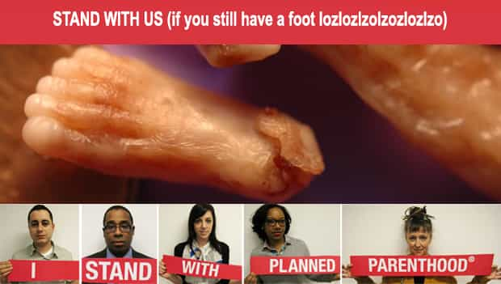

< < < Back
6 Reasons Why We Should Support Abortion – Return Of Kings
I was at dinner the other night with several friends, and one of the girls in attendance raises awareness and funding for Planned Parenthood. She makes damn sure everybody knows about it too. As usual, I sat back and enjoyed watching the one idiot at the table who felt it was a good idea to give his counter-feminist opinion on something so culturally sensitive and politically charged.
I have every intention of banging Miss Planned Parenthood, so I let the poor guy twist in the wind and alienate himself. Zero backup from me – he was on his own. It was a slow and painful social death for him, and I couldn’t help but feel sorry for the poor chap as he looked at me with “Dude! Why aren’t you backing me up?” in his eyes.
And then, in one sentence, he sealed his fate with the pro-choice chick audience. “Abortion is murder. End of discussion!”
But is abortion murder?
Damned if I know. Is a blowjob sex? Is fingering a drunken girl at a party rape?
Clearly the answer to these questions depends solely on how the woman feels about it at the time. Fetal homicide laws in 23 states say causing injury to a woman resulting in the termination of her pregnancy is murder, but those same women in those same states can go have an abortion. Some fetal deaths are murder, and some fetal deaths are not. You gotta ask the chick how she feels about it at the moment, then fund a social program to support her decision.
Stick an ardent pro-choice astronomer behind a telescope and let her zoom in until she finds a single-celled organism trapped in a methane bubble on the side of a rock, and she’ll start screaming “I found life on Mars!” Some single-celled organisms are life, and some are not. You gotta ask the chick how she feels about it at the moment, then fund a social program to support her decision.
Finger a drunken girl at a party, and the next day you’re just as likely to wake up to a Facebook friend request as you are an arrest warrant. Some drunken sex is rape, and some drunken sex is not. You gotta ask the chick how she feels about it at the moment, then fund a social program to support her decision.
Now that we’ve established that as a man your job is to shut your mouth and open your wallet, hopefully we can move on from this. There’s no way we can adequately cover this debate or come to a conclusion that’ll satisfy everyone in a couple of paragraphs, so let’s put the “Is abortion murder?” question aside for a moment. Instead of getting bogged down in the details, let’s just acknowledge that abortion is legal and make the best of it.
There are many great reasons for men to support abortion, but here are a few of the main reasons I stand with Planned Parenthood and pro-choice feminists:
1. Abortion is a great way to reduce the minority population.
I saw a black guy at the supermarket the other day and he looked like he may be up to something (khakis and a polo shirt with a corporate logo ain’t fooling anyone here). In almost the same month, a Hispanic man said “hi” to me, and it took me five minutes to realize who he was because I didn’t recognize him without a leaf blower. Needless to say, both incidences were powerfully inconvenient and offended my Caucasian sensibilities.
Fortunately, black women are four times more likely and Hispanic women are 2.5 times more likely to have abortions than white women, so we’re moving in the right direction. It’s not Susie Suburb who whacks her kid, its Jai’lysa Williams and her friend Pepita who fill the waiting rooms at abortion clinics.
That’s why I can’t figure out why the White Nationalist faction of the Manosphere hates pro-choice feminism so much. You’d think shorter lines at Kentucky Fried Chicken and a few less “RIP Jose Gonzalez 1994 – 2011” signs airbrushed in Old English font across the back window of an unregistered pickup truck would be enough to bring us together.
2. Abortion is great way to reduce the number of Democrats.
Nearly 58% of Democrats are pro-choice, versus 22% of Republicans. Clearly a reduction in leftist ideology is a good thing, since entitlement programs are a real drag on our economy. Who knows, maybe we can actually abort our way to a balanced budget by reducing the number of babies born with their cute little hands out for gub’ment assistance. Once again, Planned Parenthood is doing us all a favor.
3. Abortion is a great way to please the Lord.
Studies show that up to 25% of all clinically recognized pregnancies will end in spontaneous abortion (SAB), or miscarriage as it’s more commonly known. Clearly the biggest threat to the unborn child is God himself, so there goes the religious part of the argument. Plus, over 70% of abortions are given to women who self-identify as Protestant or Catholic, so religious women don’t seem to think it’s an issue either. Who is on the Lord’s side? Planned Parenthood apparently, which is why I stand with them.
4. Abortion saves men from having to transfer wealth to sluts.
Over 67% of abortions are performed on women who have never been married. That doesn’t include the number of women who were married in the past but unmarried at the time of the abortion. And since 60% of abortions are performed on women who have had at least one child already, the overlap shows that most abortions are saving a lot of alpha players from having to write a check to a single mom who is already getting a check from some other poor schlep.
5. Abortion promotes educational opportunities and a workforce dedicated to gender diversity.
Well over half of all abortions in America are performed on women in their 20’s. These are their prime education and critical working years, so removing unplanned biological barriers to educational and professional success is the right thing to do. Hell, there’s always in vitro fertilization later after a woman hits the wall, and even then she can still decide to get an abortion if she changes her mind after the expensive little feller sets up shop in her substandard uterus.
6. Only a little over 18,000 fully-formed babies are chopped up and sucked out of the womb each year in the United States.
That’s actually not a bad number if you think about it in relation to the total number of abortions that occur each year in America. It’s actually less than 2% of the total, and hey, sometimes it takes a woman 5 months or more to determine if having a child is convenient. Sure it probably sucks for those little guys, but 18,000+ souls per year taking one for the team is a small price to pay for all the benefits listed above.

Fewer scary black people creeping through our neighborhoods, a reduction in the number of bilingual McDonald’s billboards trashing up the freeways, much less of that “Welca do Bank of Amerdika. How may I assiss joo?” nonsense at the teller window, a balanced federal budget, more educational and professional gender equality, and fewer dudes paying child support to some chick they only banged for a month or two sounds like heaven on earth to me.
Feminists and Skinheads unite! Girl Power and White Power complement each other nicely, and a pro-choice Manosphere is a success story just waiting to happen. If you would like to join me, you can make a donation here to show your support as we right-to-choose our way to a whiter, safer, wealthier, and more aesthetically pleasing America.
References: [1] [2] [3] [4] [5]
Read Next: The Matrix Is Getting Pissed


{kind=link}